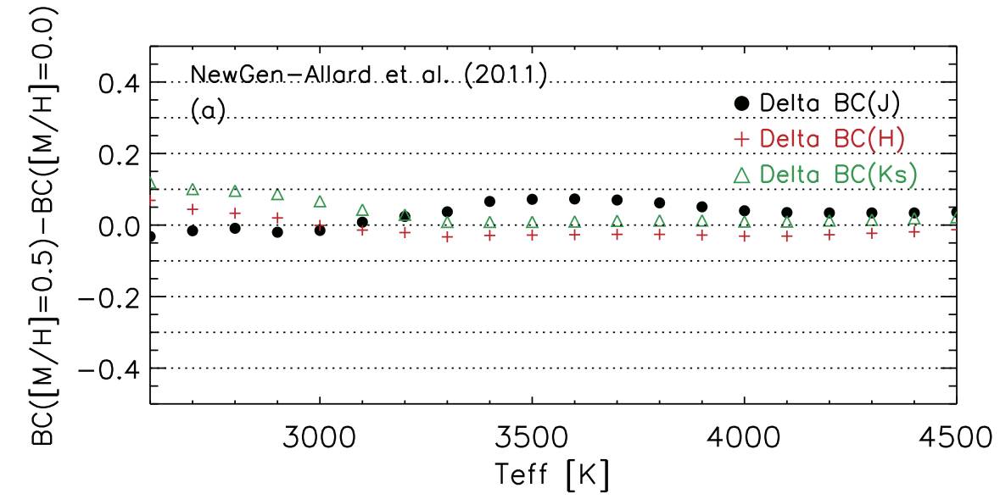

Image Credit: We thank the A&A Journal, Dr. Hurt from JPL, Dr. Dame
Finding chartes (2MASS, WISE) of the 335 bright late-type stars
Plots of the BPRP spectra available for new sample of 335 bright late-type stars
Plots of the SED fit with DUSTY models for the 335 bright late-type stars
. the TABLE of the luminosity and extinction of the new 335 selected cRSGs (available at CDS)
Image Credit: We thank the A&A Journal, Dr. Hurt from JPL, Dr. Dame
table_xyVlsr2.csv Joint samples of stars in areas A&B from Messineo&Brown (2019), Messineo (2023), and present work
MWplot_WEB.py This python routine will create the annotated Hurt's image.
Hurt's JPEG
This is the image I used (I guess, at least the size is the same)

mag_synth_Allard_met05.tabfiles to make FIG9a.
mag_synth_Allard_met00.tabfiles to make FIG9a.
CORRECTIONS to be still implemented
When the new English text comes:recall to change
Fig10a.eps
Fig11a.eps, Fig11b.eps, Fig11c.eps
Fig8a.eps
Line 921: $\Delta$ BC$_{\rm J}$ = {\bf 0.05} mag with
LIne 922: $\sigma= {\bf 0.02}$ mag
Line 923: $\Delta$ BC$_{\rm H}$ = {\bf -0.03}
Line 924 $\sigma= {\bf 0.01}$
Line 925 $\Delta$ BC$_{\rm Ks}$ = {\bf 0.014}
line 926 $\sigma= {\bf 0.01}$
Line 929 $\Delta$ BC$_{\rm J}$ = {\bf 0.050} mag with
Line 1153: We consider a sample of {\bf 762} bright late-type stars
Line 1156: {\bf 466} stars are from the literature collection by
\citet{messineo19}
{\bf 20} from \citet{messineo23}, and {\bf 276} are from the present work.
{kind=link}
{kind=link}